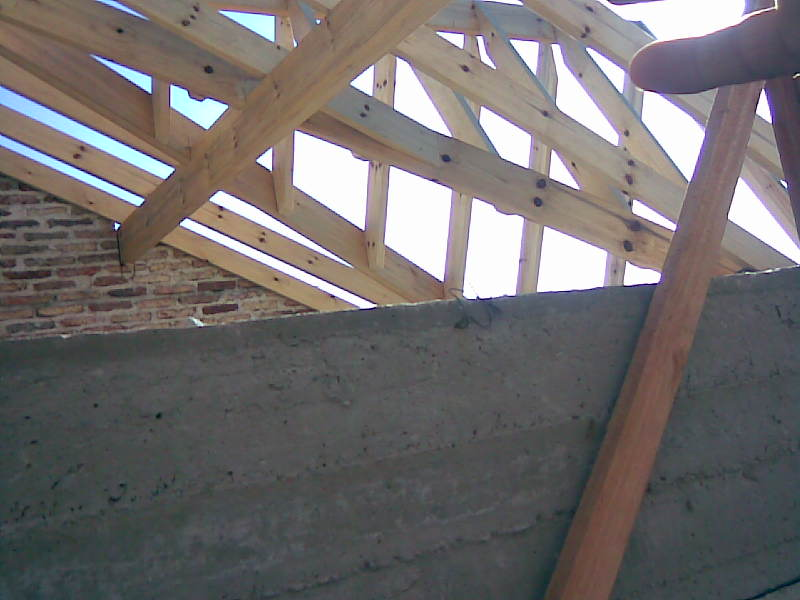
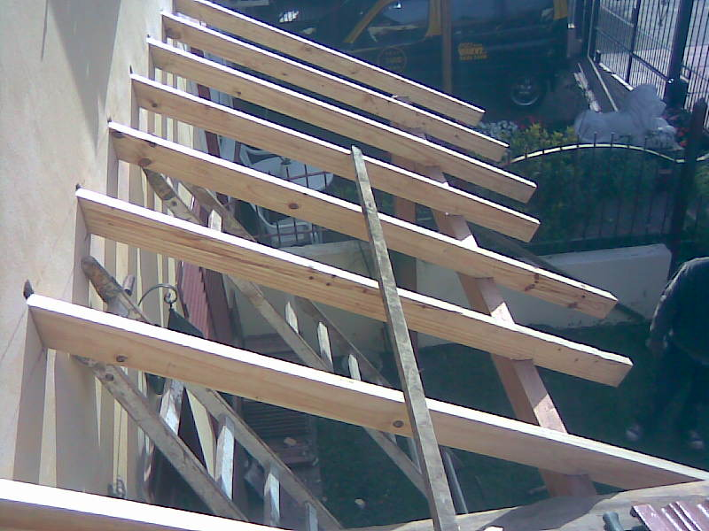
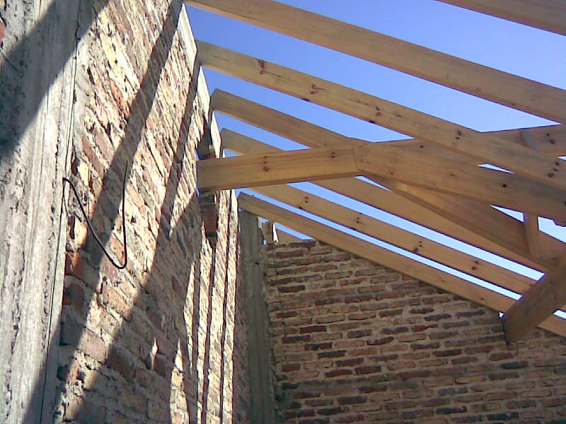

- 
- 
- 
El techo es la parte mas importante de la casa
El techo es una parte o superficie superior que funciona como protector, cubriendonos ante distintos factores climaticos calor, viento, lluvia, el mismo debe ser de calidad, bien hecho se pagara solo ya que nos permitira ahorrar en calefacción y en ventilación en tiempos extremos (invierno-verano). Su capacidad principal es la de no permitir el paso del agua, recuerde eso al pensar en la importancia de realizar un buen techado en su casa.
Para un mayor asesoramiento llamenos al (011) 5870-0201 || Nextel: 670*2054
El techo es una parte o superficie superior que funciona como protector, cubriendonos ante distintos factores climaticos calor, viento, lluvia, el mismo debe ser de calidad, bien hecho se pagara solo ya que nos permitira ahorrar en calefacción y en ventilación en tiempos extremos (invierno-verano). Su capacidad principal es la de no permitir el paso del agua, recuerde eso al pensar en la importancia de realizar un buen techado en su casa.
Para un mayor asesoramiento llamenos al (011) 5870-0201 || Nextel: 670*2054
Nuestros servicios
Colocación
Realizamos la colocación del techo desde cero, con los mejores materiales, de madera, chapa, teja francesa, pizarras y otros modelos
Ver masReparación
Parte de la carpeta esta rota, torcida o no tiene la calidad que se merece su techo, los cambios deben ser realizados de forma inmediata
Ver masGoteras
La aparición de Goteras y filtraciones en las paredes es debido a grietas o acumulación de material en la cubierta, pero todo eso tiene solución
Ver masMantenimiento
El mantenimiento preventivo del estado del techo evita que realicemos gastos mucho mas grandes, una vez al año le recomendamos realizarlo
Ver mas